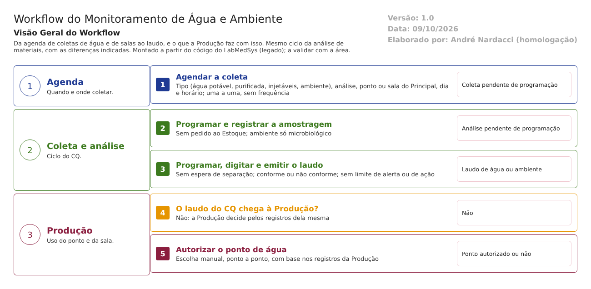

Objetivo
Este documento descreve o monitoramento de água (potável, purificada e para injetáveis) e de ambiente (salas) no Controle da Qualidade. O ciclo é o mesmo do fluxo solicitacao-analise-laudo.md (solicitação, amostragem, análise, laudo e etiqueta); aqui ficam só as diferenças e a ligação com a Produção, que usa esses pontos e salas.
Foi montado a partir do código do sistema legado. O que depende da prática da área está marcado como a validar. Os casos de teste estão no fim.
Escopo
- Programação de Solicitação de Análise (agenda de água e ambiente).
- Diferenças na amostragem, na análise, no laudo e na etiqueta.
- Ligação com a Produção (autorização do ponto de água e controle paralelo de água e ambiente).
Fora do escopo: o cadastro dos pontos de água e dos ambientes (Principal) e as telas de água e ambiente da Produção, que serão analisadas com aquele módulo.
Nomes das telas: como aparecem no menu ou no alto de cada tela. Os caminhos de código ficam só nas regras e são relativos a 4.controle_qualidade/app/. Para encurtar: UI/ = HSolutions.CQ.UI/, Infra/ = HSolutions.CQ.Infrastructure/.
Visão geral do processo

O CQ agenda, uma a uma, as coletas de água e de ambiente: escolhe o tipo (água potável, purificada, para injetáveis, ou ambiente), o tipo de análise, o ponto de água ou a sala (vindos do Principal) e o dia e horário. Cada agendamento vira uma solicitação de análise, que segue o ciclo normal: programação da amostragem, registro, programação da análise, digitação, laudo e etiqueta.
As diferenças em relação a materiais: não há pedido ao Estoque (nem separação, nem reanálise), a análise não espera separação de amostra, ambiente só tem análise microbiológica, e o laudo, o boletim e a etiqueta são próprios de água e ambiente.
O resultado não chega à Produção: a Produção libera o uso do ponto de água pelos registros dela mesma, numa decisão manual, e tem telas próprias de análise de água e de ambiente.
Descrição funcional das etapas
"A numeração das regras de negócio é reiniciada em cada atividade, visando facilitar sua identificação e manutenção."
Agenda de água e ambiente
Regras de negócio
- RN001 – A agenda mostra só os tipos água e ambiente. O usuário escolhe o tipo de item e o tipo de análise (
UI/Areas/SolicitacaoAnalise/Controllers/ProgramacaoSolicitacaoController.cs:63-66). - RN002 – Os pontos e salas vêm do Principal, consultados na hora: para água, os pontos do tipo escolhido; para ambiente, todos os ambientes. A identificação é a tag do ponto ou da sala (
Infra/SolicitacaoAnalise/ItensProgramaveisService.cs:53-73,:142,:172). - RN003 – O sistema não traz a classe nem o grau de limpeza da sala; só nome, descrição e tag (
ItensProgramaveisService.cs:172). - RN004 – Cada coleta é agendada uma de cada vez, para um dia e horário. Não há frequência nem recorrência por ponto ou por sala (
ProgramacaoSolicitacaoController.cs:102-118). - RN005 – Não se agenda para hoje nem para trás, e o horário não pode repetir outro do mesmo tipo no mesmo dia ("Horário já agendado"). Ao mudar a data, o sistema encaixa o horário de 30 em 30 minutos entre 8h e 18h; na inclusão, vale o horário digitado (
ProgramacaoSolicitacaoController.cs:271-283;Infra/SolicitacaoAnalise/SolicitacaoAnaliseService.cs:49,:133-158). - RN006 – A solicitação nasce em Coleta pendente de programação, com fase de coleta. O item de análise é criado no CQ se ainda não existir (
SolicitacaoAnaliseService.cs:32-87). - RN007 – A exclusão vai para a lixeira, sem justificativa e sem histórico (
SolicitacaoAnaliseService.cs:116-128).
Telas do sistema
| Módulo | Tela | Finalidade |
|---|---|---|
| Controle da Qualidade | Programação de Solicitação de Análise | Agenda das coletas de água e ambiente |
| Controle da Qualidade | Consultar Coletas Pendentes de Programação | Coletas agendadas a programar |
| Principal | (consulta automática) | Fornece os pontos de água e os ambientes |
Amostragem, análise e laudo: o que muda
Regras de negócio
- RN001 – Água e ambiente não geram pedido ao Estoque (nem separação de amostra, nem reanálise), que só existe para produto e material (
HSolutions.CQ.Domain/SolicitacaoAnalise/SolicitacaoAnalise.cs:275-297). - RN002 – A Programação de Amostragem tem um filtro próprio para água e ambiente; para água, mostra os dados do ponto vindos do Principal. O responsável é escolhido entre os amostradores. A conta de quantidade pela regra de amostragem está desligada para esses itens (
UI/Areas/SolicitacaoAnalise/Controllers/ProgramacaoColetaController.cs:46-87;SolicitacaoAnaliseService.cs:185-225). - RN003 – Ambiente só aceita análise microbiológica (
UI/Areas/Coleta/Controllers/RegraAmostragemController.cs:678-681). - RN004 – A análise não espera a separação de amostra no Estoque (
UI/Areas/Analise/Controllers/AnaliseProgramadaController.cs:205-223). - RN005 – O boletim de ambiente traz quatro condições de controle (sala vazia, fluxo ligado, ar ligado, sala em atividade) fixas no código e sempre marcadas como "não corresponde": a condição real da sala na coleta não é registrada (
UI/Controllers/Services/ObterRelatorioAnaliseService.cs:328-347). - RN006 – Água e ambiente têm laudo e etiqueta próprios; a aprovação e a emissão seguem as mesmas regras do fluxo geral (
ObterRelatorioAnaliseService.cs:444-460;HSolutions.CQ.Reports/Analise/AnaliseProgramada/GerarEtiquetaReports.cs:26-29). - RN007 – Não há limite de alerta nem limite de ação, nem relatório de tendência: o resultado é só "conforme" ou "não conforme" (
ObterRelatorioAnaliseService.cs:350-354).
Telas do sistema
| Módulo | Tela | Finalidade |
|---|---|---|
| Controle da Qualidade | Programação de Amostragem; Registro de Amostragem; Consultar Análise Programada; Emissão Laudo Final; Gerar Etiqueta | As mesmas do fluxo geral, com filtro de água e ambiente |
Ligação com a Produção
Regras de negócio
- RN001 – Na Produção, a autorização do ponto de água considera o ponto liberado quando o registro de análise da própria Produção mais recente está revisado e dentro da validade. Não consulta o laudo do CQ (
2.producao/app/LaboSys_UI/autorizacoes/autorizacao_ponto_agua_producao_ed.aspx.cs:444;2.producao/app/LaboSys_BLL/bllRegistroAnalisePontosAgua.cs:77-85). - RN002 – Autorizar ou não o uso do ponto é uma escolha manual, ponto a ponto (sim, não, pendente, cancelada) (
autorizacao_ponto_agua_producao_ed.aspx.cs:64-79,:146-162). - RN003 – A Produção tem telas próprias para programar e registrar análises de água e de ambiente (
2.producao/app/LaboSys_UI/preparacao/analise_pontos_agua_*,registro_analise_pontos_agua_*,analise_ambiente_*): um controle paralelo ao do CQ.
Telas do sistema
| Módulo | Tela | Finalidade |
|---|---|---|
| Produção | Autorização de ponto de água | Liberar o uso do ponto para a ordem de produção |
| Produção | Análise e registro de pontos de água; análise de ambiente | Controle próprio da Produção (a analisar com o módulo) |
Pontos de atenção
1. Não há programa de monitoramento. As coletas são agendadas uma a uma, sem frequência por ponto ou sala nem geração periódica. A validar: como a empresa garante a frequência hoje (planilha, procedimento).
2. Não há limite de alerta nem de ação, nem tendência. O resultado é só conforme ou não conforme (RDC 658/2022, art. 245).
3. O resultado do CQ não protege a produção. Um ponto de água reprovado no CQ pode ser liberado na Produção, que decide pelos próprios registros e à mão.
4. Dois controles da mesma coisa. CQ e Produção registram análises de água e de ambiente separadamente; os resultados podem divergir (ver transversal/01-telas-repetidas.md).
5. A sala não tem classe de limpeza no CQ. Os critérios não podem variar por grau (A, B, C, D).
6. Condições da sala fixas no boletim. As quatro condições de controle saem sempre "não corresponde"; a condição real na coleta não é registrada.
7. Regra de horário incoerente. O encaixe de 30 em 30 minutos vale só ao mudar a data; na inclusão, vale qualquer horário.
Casos de teste
Dados: um ponto de água purificada e uma sala TESTE cadastrados no Principal (reaproveitar os ambientes TESTE dos testes do Principal, se houver); regras de análise TESTE para água (faixa) e ambiente (conformidade).
| Caso | O que fazer | Resultado esperado |
|---|---|---|
| CT-CQ-060 | Agendar uma coleta de água para hoje | Recusa |
| CT-CQ-061 | Agendar duas coletas de água no mesmo dia e horário | Recusa: "Horário já agendado" |
| CT-CQ-062 | Agendar uma coleta de ambiente com análise físico-química | Recusa (ambiente só microbiológico) |
| CT-CQ-063 | Procurar uma opção de frequência ou recorrência por ponto | Registrar que não existe (ponto 1) |
| CT-CQ-064 | Programar e registrar a amostragem de água | Sem pedido ao Estoque; análise sem esperar separação |
| CT-CQ-065 | Imprimir o boletim de ambiente | Conferir as quatro condições sempre "não corresponde" (ponto 6) |
| CT-CQ-066 | Laudo de água com um resultado não conforme, reprovado e emitido; na Produção, autorizar o uso do mesmo ponto | Pela norma, a Produção deveria ser impedida. Registrar se autorizar (ponto 3) |
| CT-CQ-067 | Excluir uma coleta agendada e consultar o histórico | Registrar a falta de justificativa e de histórico |
| CT-CQ-068 | Mudar a data de uma coleta para um dia já cheio até 18h | Recusa: "Já existe programação até horário limite na data" |
Prioridade (testes por risco): CT-CQ-066 e 063 primeiro. Eles tocam o uso de água e de salas fora de especificação na fabricação.